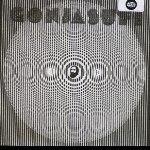
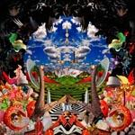
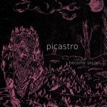
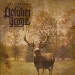

Music Reviews
-

Drive-By Truckers The Big To-Do
The respected Southern indie band's newest effort should pull in new fans like quicksand.
Ryan Faughnder reviews... -

Gonjasufi A Sufi and a Killer
Sumach Ecks, a drug addict with anger issues turned yoga instructor, has made one of the most interesting and captivating albums of 2010.
Andrew Baer has been listening to this for a week straight... -

Golden Triangle Double Jointer
Nancy Sinatra gets her first pair of Doc Martens and learns a little bit about The Cramps. Then, she puts out a new album.
Sean Caldwell reviews... -

Serena Maneesh No. 2: Abyss in B-Minor
It took five years, but the Norwegian newgazers are finally back with Abyss in B Minor, a deep-rooted blast of sonic layers that's far more ominous than their debut.
Juan Edgardo Rodriguez can't help feeling a bit disillusioned... -
Robert George Saull & The Purgatory Players Gardens EP
The debut EP from Robert George Saull & The Purgatory Players is a rare demonstration of professionalism and refinement from a band in their relative youth.
Daniel Dylan Wray reviews... -
Strange Boys Be Brave
Though laced with what an unprepared ear will originally interpret as an irregular and slightly dissonant air, The Strange Boys new album, Be Brave, has an odd way of growing on you.
Jackson White explains... -

Picastro Become Secret
Become Secret is bleak, unsettling, dour, and at times, downright scary!
Lukas Clark-Memler would not listen to this right before bed... -
Liars Sisterworld
I still think they might be the best thing going. And they do it again.
Alan Shulman reviews -

Frightened Rabbit The Winter Of Mixed Drinks
Great Scots follow up their shit-kicking weep-fest second album with a pleasent, muddy record.
Nate Adams doesn't like looking up lyrics... -

The October Game Wildblood
Hotly topped by the BBC and Elbow, Bedfordshire's The October Game are eminently thoughtful in their approach to expansive indie-rock.
Paul Fowler reviews...